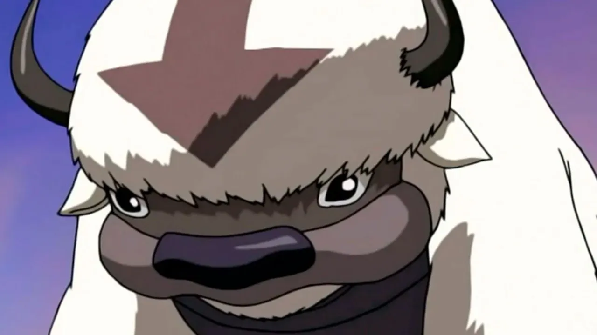
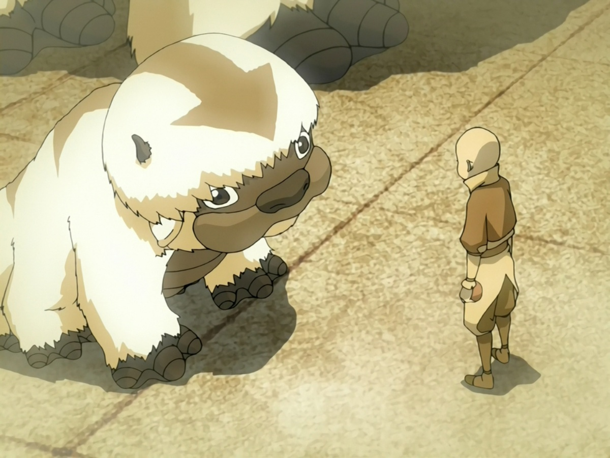

BISONTES VOLADOR
El Maestro del Aire Original
El bisonte volador, también conocido como el bisonte de los cielos y el bisonte del aire, es un gran bóvido que vive en algunos de los Templos Aire, junto con los Nómadas Aire y supuestamente son la única manera de llegar a un Templo Aire antes y después de la Guerra de los Cien Años. El bisonte volador más notable fue Appa, animal guía del Avatar Aang y principal medio de transporte a larga distancia del Equipo Avatar. Algunos bisontes también viven en la Nación del Fuego, tendía, en una isla cuidados por los Sabios del Fuego.
Historia
Antes de la Guerra de los Cien Años, muchos bisontes voladores vivieron en los Templos Aire. Ellos fueron considerados como los primeros Maestros Aire y eran muy respetados por los Nómadas Aire, quienes creían que una vez que se había elegido un bisonte, sería su compañero de toda la vida.
Después del Genocidio de los Nómadas Aire, se creía que Appa era el último Bisonte volador. Sin embargo, durante una de sus aventuras después de la Guerra de los Cien Años, Aang descubre un nuevo rebaño, y la población comenzó a crecer de nuevo con colonias de bisontes sanos residiendo en el Templo Aire de la Isla y en los otros Templos Aire.
Comportamiento
Todo los Bisontes voladores emplean Aire Control para volar, con sus amplias colas para maniobrar a través de corrientes de aire y para defenderse de los ataques. También son capaces de utilizar sus bocas y posiblemente sus narices para hacer Aire Control. Aunque bastante dóciles, los bisontes voladores pueden ser opositores feroces y poderosos cuando se ven dispuestos a luchar, ya por su gran fuerza física y habilidades de Aire Control, como Appa ha demostrado en muchas ocasiones. Estas criaturas eran el principal medio de transporte para los Nómadas Aire.
Era costumbre que los jóvenes Nómadas Aire eligieran un bisonte volador para ser su compañero de toda la vida. Aang eligió a Appa en el Templo Aire del Este cuando él era un niño pequeño, dándole una manzana. En el Templo Aire del Norte, los Maestros Aire celebraban campeonatos de polo de bisontes. Este partido se jugaba en el aire.
Cabalgando sus bisontes, los Maestros Aire trataban de encestar la bola con su mazo de polo en la portería del oponente. Para ordenar a sus bisontes de emplear el vuelo, tanto Aang y Tenzin utilizaban el comando "yip-yip". Para convocar a un bisonte desde un lugar lejano, es posible utilizar un silbato especial. Un silbato de bisontes voladores que se utilizaba de la misma manera que un silbato para perros, soplando a una frecuencia que puede ser escuchado por los seres humanos, pero parece muy suave. Alerta a los bisontes y los envía a su invocador.